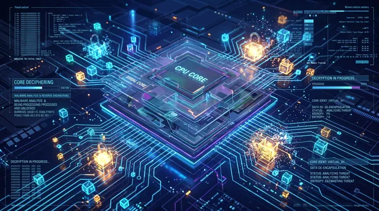
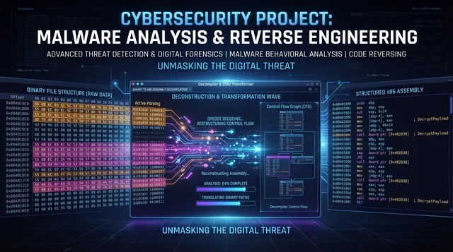
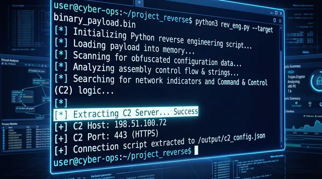

La seguridad se comunica mejor cuando se ve. Un concepto técnicamente correcto sobre movimiento lateral puede perder claridad si solo se explica con texto. Este set traduce cinco ideas del laboratorio —threat intel, ingeniería inversa, triage, propagación en red y automatización— en escenas visuales con su lectura analítica: el mismo criterio técnico, en un formato que se entiende en segundos y comunica valor sin exigir contexto previo.
El formato también cuida la experiencia de quien lo abre: en pantallas grandes los clips arrancan en silencio y de forma automática, y en móvil quedan como imagen con un botón de reproducción. Sin audio inesperado y sin consumo de datos innecesario.
Un mapa de amenazas no es la amenaza
Los mapas de threat intel son agregación de telemetría: muestran dónde hay más ruido, no dónde está tu riesgo. Un punto rojo sobre una región no dice nada sobre tus activos.
Sirven para una sola cosa bien hecha: priorizar hipótesis. La decisión se toma con datos propios —qué expusiste, qué logueás, qué alcanza a tu red—.
LEER: PENSAR COMO ATACANTE →Del byte al ensamblador
Un binario no se lee de corrido: se interroga. Secciones, imports, strings, entropía y llamadas raras van armando el relato.
La ingeniería inversa es método, no memoria de opcodes. La pregunta correcta no es qué hace esta instrucción, sino qué historia cuenta el conjunto.
VER: LAB DE REVERSING →Alerta no es incidente
Una detección solo dice algo pasó acá. El trabajo empieza después: triage. Qué activo, qué alcance, qué artefactos quedaron para analizar.
Sin ese contexto, cada alerta compite por atención y termina ganando la más ruidosa, que casi nunca es la más grave.
VER: SIEM Y MONITOREO →La confianza es el camino
El movimiento lateral rara vez es solo una vulnerabilidad explotada: usa confianza. Credenciales reutilizadas, servicios internos que se aceptan entre sí sin preguntar.
Por eso segmentar no es burocracia de red: es cortar el grafo por donde el atacante necesita pasar.
LEER: AISLAMIENTO EN VMs →Automatizar lo repetible
Automatizar tiene sentido en lo determinista: normalizar evidencia, recolectar, comparar, avisar. Eso libera horas y baja el error humano.
Lo que requiere juicio se queda con una persona que lo lea. Un script que decide solo es un problema con cron.
LEER: APRENDIZAJE CONTINUO →Cuatro fijas que cierran el set
No todo concepto pide movimiento. Aislamiento entre host y VM, decompilación, lectura de código ajeno y automatización con Python se explican mejor quietos: la imagen fija deja mirar el detalle el tiempo que haga falta.


